소개
mdBook은 온라인 책을 만들 수 있는 프로그램입니다. 지금 보시는 이 사이트가 mdBook으로 만들어져 있습니다. mdBook을 통해 마크다운이라는 포맷으로 만들어진 여러 글을 묶어서 하나의 책을 만든 다음, 인터넷에 올려서 지금 여러분이 보고 계시는 것처럼 인터넷에서 책을 볼 수 있게 할 수 있습니다.
mdBook은 여러 단원으로 이루어진 튜토리얼이나 칼럼, 자작문항 및 해설 모음집, 또는 그냥 책의 형태로 쓰고 싶은 어느 것이나 쓸 수 있습니다. 기존의 카페나 블로그 시스템이라면, 장편의 글을 한 번에 전부 완성하고 업로드하거나, 시리즈 형식의 글은 여러 차례 글을 올린 후 별도의 글에 목차별로 글을 모아야 하는데, mdBook을 사용하면 글이 여기저기 퍼져있거나 너무 한 데에 뭉쳐있지 않게끔 깔끔하게 묶어서 단원별로 정리할 수 있습니다.
또한, mdBook을 사용하면 일관된 테마로 깔끔하게 글을 게시할 수 있습니다. 기존의 카페나 블로그에 올리는 글은 테마가 들쭉날쭉해서 독자 입장에서 보기 어려울 수 있습니다. 하지만 mdBook은 글의 내용만 담고 있는 여러 마크다운 파일을 묶은 상태에서, 전체에 일관된 테마를 적용하는 방식이기 때문에 독자가 보기에 편하고 깔끔합니다.
이 책에서는 간단한 온라인 책을 직접 하나 만들어보면서, 여러분들도 이와 같은 깔끔한 책을 만들 수 있게 도와드릴 겁니다. 단계별로 하나씩 둘러보면서 온라인 책을 만드는 법을 알아봅시다.
mdBook로 직접 만든 칼럼의 예시는 여기서 확인하실 수 있습니다: https://bamgoesn.github.io/hard-relativistic/
mdBook의 구성
이 단원에서는 mdBook이 정확히 어떤 일을 하는지 둘러볼 겁니다. 앞선 소개에서 mdBook은 마크다운을 묶었느니 뭐니 설명을 하긴 했지만, 이게 무슨 의미인지 이해하기 어려웠을 수 있습니다. 이를 이해할 수 있게 도와드리기 위해, 마크다운이 뭔지, mdBook은 무슨 역할을 하는지 간략하게 설명하고자 합니다.
마크다운이란
마크다운(Markdown)이란 텍스트를 기반으로 문서를 작성할 수 있는 언어를 의미합니다. 지금 보시는 화면 하나가 마크다운 파일 하나입니다. 블로그로 예를 든다면, 하나의 블로그 게시글이 마크다운 파일 하나라고 보시면 됩니다.
마크다운은 지금 보시는 이 문서와 같이 대단원, 중단원, 소단원 등으로 나뉘는 형식의 문서를 간결하게 작성하는 데에 특화되어 있습니다. 칼럼의 경우 많은 수의 단원으로 나뉘어 있고, 어려운 문제의 풀이는 여러 단계로 나뉘어 있으므로, 마크다운이 이와 같은 글에 적절한 포맷이라고 할 수 있겠습니다.
또한, 일반적인 문서 파일과 다르게 마크다운은 텍스트 파일로만 되어 있습니다. 즉, 테마와 같은 외관상의 구조는 마크다운에 포함되어 있지 않습니다. 마크다운은 오로지 글의 구조와 내용만 저장합니다. 테마는 마크다운 파일을 표시하는 플랫폼이 마크다운 파일에 적용해서 화면에 보여집니다.
mdBook이란
mdBook은 마크다운 파일 여러 개를 단원별로 묶어서 온라인 책을 만들어주는 프로그램입니다. 이 사이트의 구조에서 보시듯이, mdBook은 여러 개의 마크다운 파일을 묶어서 하나의 책으로 만들어줍니다. 마크다운 파일을 묶기만 하는 것이 아니라, 섹션과 단원으로 나눠서 글을 정리할 수도 있습니다.
앞서 마크다운 파일은 오로지 글의 구조와 내용만 담는다고 했는데요, mdBook은 지금 보시는 것과 같은 테마를 마크다운에 입혀줍니다. 즉, 지금 보시는 화면의 디자인은 마크다운이 아닌 mdBook의 일부입니다.
mdBook은 오픈소스이며, 가입이 필요 없습니다. 오프라인 환경에서도 작업할 수 있으며, 자유도가 매우 높습니다. 굳이 이 책에서 설명하는 방식이 아닌 다른 방식으로 웹에 책을 올릴 수도 있고, 아예 올리지 않고 오프라인 환경에서 볼 수 있는 파일로만 만들 수도 있습니다.
이와 같이 마크다운 파일을 책으로 만들어주는 플랫폼이 mdBook만 있는 것은 아닙니다. 사실, 이러한 일에 가장 잘 알려진 프로그램은 GitBook입니다. 이 책에서는 mdBook을 설명하지만, GitBook을 사용해도 동일한 목적을 달성할 수 있습니다.
GitHub Pages란
사실 mdBook은 마크다운을 묶어주기만 하지, 책을 웹상에 올려주지는 않습니다. 이 책에서 여러분만의 책을 만들어서 인터넷에 올리는 방법을 설명할 때, GitHub Pages를 사용하는 방법을 설명해드릴 겁니다.
Git은 매우 유명한 버전 관리 시스템입니다. 버전 관리 시스템이라는 말에서 드러나듯이, Git은 지정한 폴더 속의 파일을 버전 단위로 나눠서 관리해주는 역할을 합니다. 보통 개발자들이 많이 사용하지만, 다른 목적으로도 사용이 가능합니다.
GitHub은 git을 온라인에 저장할 수 있는 사이트입니다. Git을 온라인에 저장한다는 의미는 곧 자신의 프로젝트를 온라인에 저장한다는 의미이기도 해서, 자신의 프로젝트가 들어있는 폴더를 공개적으로 업로드할 수 있다고 이해하셔도 됩니다. 개발자들 사이에선 협업을 위해서나 전세계의 프로그래머들과 소통하기 위해서 등의 목적으로 사용하지만, 이 책의 목적과는 별 상관이 없습니다.
GitHub Pages는 웹사이트 파일을 GitHub에 공개적으로 업로드해서 사이트로 간편하게 띄울 수 있는 서비스입니다. 즉, 저희는 mdBook을 통해 만든 책을 GitHub Pages로 웹상에 올리는 것을 할 예정입니다.
이제 mdBook을 이용하기 위해 알아야 하는 용어를 모두 알았으니, mdBook을 설치해봅시다.
프로그램 설치
mdBook을 사용하기 전에 설치해야 할 프로그램이 있습니다. mdBook, 코드 에디터(선택), 그리고 git입니다. 하나씩 설치해봅시다.
mdBook 설치
mdBook을 설치하는 방법은 공식 가이드에 나와있긴 하지만, 영어나 컴퓨터를 잘 모르는 사람이 보면 머리가 아플 만한 글입니다. 따라서, 이 글에서는 Windows 운영체제에서 mdBook을 설치하는 방법을 알려드리겠습니다.
컴퓨터에 cargo가 설치되어 있다면 터미널을 키고 cargo install mdbook을 입력하면 설치가 끝납니다. 만약 이게 무슨 의미인지 모르시겠다면 설치되어 있지 않은 것이니 아래 글을 읽으시면 됩니다.
mdBook 프로그램 다운로드
mdBook 릴리즈에 들어가서 가장 최신 버전의 설치파일을 다운받으시면 됩니다. 윈도우를 사용하신다면 mdbook-(버전명)-x86_64-pc-windows-msvc.zip을 다운받으시면 됩니다.
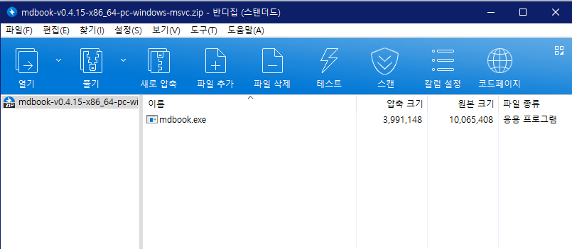
다운받으신 압축파일을 열어보면 위와 같이 mdBook.exe라는 파일이 있을 겁니다. 이제, 내 컴퓨터를 열고 C 드라이브로 가셔서 mdbook이라는 이름의 폴더를 만들어주세요. 그리고, 그 폴더 안에 bin이라는 폴더를 만들어주세요. 그 bin 폴더 안에 압축파일에 들어 있던 mdBook.exe를 아래와 같이 넣어주세요.
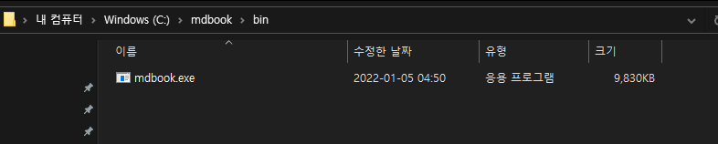
환경변수(PATH) 설정
이 문단의 이미지는 이 글에서 가져왔습니다.
이제 환경변수라는 것을 설정할 겁니다. 환경변수를 설정하면, cmd창에서 mdBook을 어디서든 편리하게 실행할 수 있습니다. 컴퓨터 좌측 하단 시작 버튼을 눌러 고급 시스템 설정을 검색합니다.

고급 시스템 설정 보기를 클릭해 실행하면 아래와 같은 창이 나옵니다.

하단의 환경 변수를 클릭하면 아래와 같은 창이 나옵니다. 시스템 변수에서 변수명이 PATH인 항목을 찾아 편집을 클릭합니다.

그러면 아래와 같은 환경 변수 편집 창이 나옵니다. 우측의 찾아보기를 클릭합니다.

그러면 아래와 같이 폴더를 선택할 수 있는 창이 나옵니다. 아까 만들었던 mdbook 폴더를 선택해줍니다. 그 안에 있는 bin이 아닙니다.

그리고 모든 창에 확인을 눌러줘서 나오면 됩니다. 그리고 시작 버튼을 눌러 cmd를 입력해서 명령 프롬프트를 실행하고, mdbook을 입력하고 엔터를 누릅니다.

이때 위와 같이 무슨 문구가 막 나오면 성공입니다! 이제 여러분은 mdBook으로 책을 만들 준비가 되었습니다.
이로써 mdBook 설치는 완료되었지만, 아직 한 단계가 더 남아있습니다. 마크다운 파일을 편집할 때 메모장으로 편집하면 답답해 죽습니다. 더 편리한 도구가 필요합니다.
에디터
마크다운은 텍스트 파일입니다. 메모장으로 작성하는 그 텍스트 파일을 말하는 것이 맞습니다. 하지만, 메모장은 하나의 프로젝트를 진행하기에는 기능이 너무 부실합니다. 메모장보다 기능이 많은 다른 텍스트 에디터를 사용하는 것이 좋습니다.
우리에게 쓰기 좋은 텍스트 에디터는, 마크다운 파일의 구조를 한 눈에 알아보기 쉽게 보여주고, 지정한 폴더의 구조를 직관적으로 보여주며, 여러 개의 텍스트 파일을 한 창에 여러 탭으로 열 수 있는 프로그램입니다. 이러한 용도로 좋은 텍스트 에디터로는 Sublime Text, notepad++ 등이 있는데, 현재 가장 많은 사람들에게 사용되고 있는 텍스트 에디터는 Visual Studio Code입니다. 줄여서 VSC라고도 합니다.
앞으로 이 책에서는 VSC를 사용해서 책을 만들 거지만, 다른 텍스트 에디터도 사용이 가능합니다. 추천하진 않지만 메모장도 사용이 가능은 합니다. 결국 같은 텍스트 에디터이고 사용하기만 편리하면 어느 것을 사용해도 상관 없으나, 이 책에서 설명하는 것과 조금 내용이 다를 수 있음은 감안해주시기 바랍니다.
만약 이미 사용하고 있는 텍스트 에디터가 있거나, 이미 VSC가 설치되어 있는 사람들은 Better TOML 확장만 설치하고 이 챕터를 스킵해주세요. 아래에선 VSC를 설치하고 간략하게 사용하는 방법을 정리합니다.
설치
Visual Studio Code 공식 사이트에 들어가 다운로드 버튼을 눌러서 설치하면 끝입니다.
기본 사용 방법
VSC를 처음 실행하면 아래와 같은 창이 나올 겁니다.
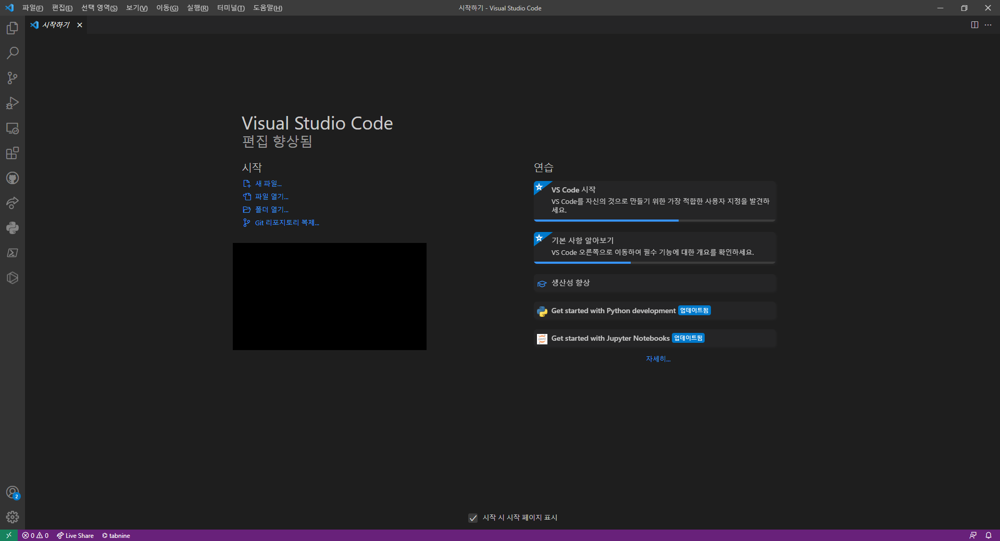
색이 조금 다를 수 있고, 왼쪽 사이드바에 버튼이 더 적겠지만 상관 없습니다. 만약 언어를 바꾸고 싶다면 이 글을 참고해서 바꿔주세요.
그러면, 왼쪽 바의 가장 위쪽 종이 2장이 그려진 버튼을 클릭해봅시다.
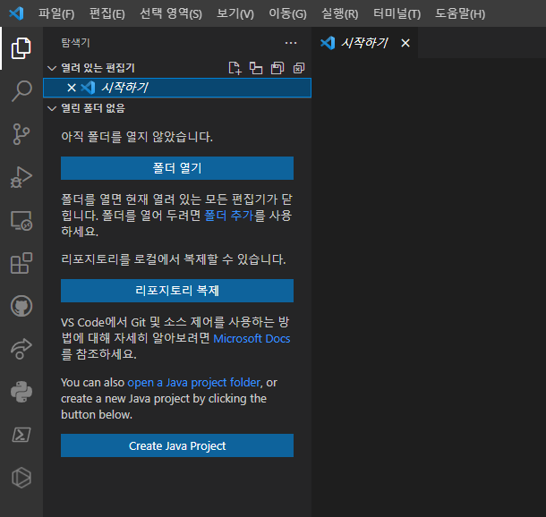
그러면 폴더를 여는 버튼이 나옵니다. 이 버튼을 클릭해서 나중에 우리의 책이 저장되어 있는 폴더를 열어서 거기서 작업을 할 겁니다.
확장 프로그램 설치
VSC의 가장 큰 장점 중 하나로, 커뮤니티가 매우 크게 활성화되어 있어 유용한 확장 프로그램이 매우 많습니다. 확장 프로그램을 적절히 설치하면 VSC를 한결 편리하게 사용할 수 있습니다.
확장 프로그램은 사이드바의 작은 정사각형 4개가 그려진 버튼을 클릭해서 관리할 수 있습니다. 아래 그림의 왼쪽 사이드바에서 강조된 버튼입니다.

클릭하시면 상단에 마켓플레이스에서 확장 검색이라고 나오면서 확장 프로그램을 검색할 수 있는 창이 나옵니다. 이 창에 다음 확장프로그램을 검색해서 설치해줍시다.
- Better TOML: mdBook에 포함된 toml 파일을 관리하기 편하게 해줍니다.
- Prettier (선택): 작성한 마크다운 파일을 보기 좋게 정리해줍니다.
- Markdown All in One (선택): 마크다운 파일을 작성할 때 편리한 기능을 제공해줍니다만, mdBook 작성시엔 별 상관이 없습니다.
- GlassIt-VSC (선택): VSC 화면을 반투명하게 해줍니다. 모니터가 하나밖에 없거나 모니터가 작을 때, VSC 화면 뒤편으로 작성하고 있는 책을 실시간으로 볼 수 있게 해줍니다.
Prettier 사용 설정
VSC에서 Ctrl+Shift+P를 누르고 '설정'을 검색하면 기본 설정: 설정 열기(UI) 항목이 있을 겁니다. 그 항목을 방향키와 엔터로 선택하면 창이 하나 열립니다. 상단에 있는 검색창에 아래 두 개를 검색해서 다음과 같이 설정해주세요.
- format on save 검색 -> Format on save 체크
- default formatter 검색 -> Default Formatter를 None에서 Prettier로 변경
이로써 파일이 저장될 때마다 파일이 깔끔하게 정리되며, 이는 Prettier 확장 프로그램을 사용해서 이루어집니다.
기타 사용방법
저희는 후에 직접 책을 만들어보면서 필요한 기능을 자연스럽게 배울 거지만, 프로그램 사용법을 더 깊이 알고 싶으시다면 인터넷에 튜토리얼이 널려 있으므로 구글링하시면 됩니다. 'visual studio code 사용법'을 검색하면 튜토리얼이 쏟아져 나옵니다. 그래도 잘 모르시겠다면 이 글을 보시면 됩니다.
git 설치
GitHub Pages를 이용하기 위해선 git을 설치해야 합니다. 이 글을 참고하면서 설치하면 됩니다. 모르는 항목이 있으면 그냥 다음을 눌러도 괜찮습니다. 하지만, 기본 에디터를 선택하는 창에서 Visual Studio Code를 사용한다는 항목을 선택하는 것이 좋습니다. 해당 글에선 Vim을 선택한다고 하는데 Windows 환경이면 애초부터 vim이 설치되어 있지도 않아서 사용하지 못 할 겁니다.
설치한 다음 mdBook 설치 후 했던 것과 동일하게, cmd를 실행하고 바로 git을 입력해봅시다. usage:로 시작하는 무언가가 나온다면 설치 성공입니다.
터미널이란
이제 곧 본격적인 튜토리얼에 들어갈 건데, 그 전에 터미널이 무엇인지 알아야 합니다. 이는, mdBook이 커맨드 라인 인터페이스(CLI) 프로그램이기 때문에, 터미널이라는 것을 사용해서 mdBook을 다루게 될 것이기 때문입니다.
터미널이 무엇인지 이미 알고 계시다면 이 항목은 건너뛰시면 됩니다.
터미널
터미널은 컴퓨터를 커맨드를 입력함으로써 사용할 수 있게 해주는 프로그램입니다. CMD가 대표적인 Windows의 터미널입니다. 시작 버튼을 눌러 cmd를 입력해 명령 프롬프트를 실행해봅시다.
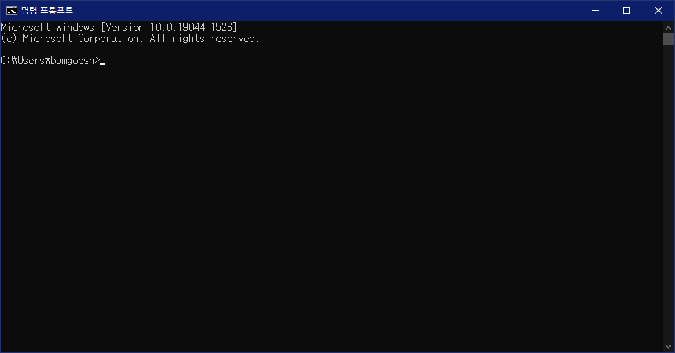
CMD를 처음 실행하면 위와 같은 창이 나옵니다. C:\Users\bamgoesn라는 문구 뒤에 글자를 입력할 수 있는 커서가 깜빡이는 것을 확인할 수 있는데, 저 문구는 현재 터미널이 가리키고 있는 폴더의 위치입니다. 즉, 현재 터미널이 C드라이브의 Users 폴더의 bamgoesn 폴더를 가리키고 있는 것입니다.
터미널은 가리키고 있는 폴더에 대해 커맨드를 입력함으로써 동작하는 프로그램입니다. 감을 잡게 해드리기 위해 기본적인 커맨드를 입력해봅시다.
폴더 이동
터미널을 키자마자 나온 창에서 cd (가리키고 있는 폴더)\Desktop을 입력해봅시다.
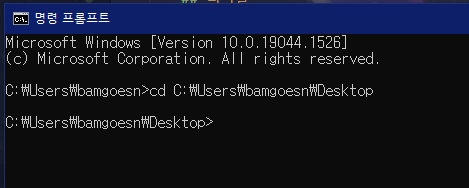
가리키고 있는 폴더가 C:\Users\bamgoesn\Desktop으로 바뀌었습니다. 이 디렉토리는 바탕화면입니다. 이와 같이 cd는 가리키고 있는 디렉토리를 변경하는 커맨드입니다. cd 뒤에 이동할 디렉토리를 입력함으로써 해당 디렉토리를 가리키는 상태로 CMD를 조작할 수 있습니다.
상대 경로
앞서 폴더 이름 전체를 입력함으로써 디렉토리를 이동했는데, 아무리 봐도 너무 불편합니다. 그럼 한번 cd ..\를 입력해봅시다.
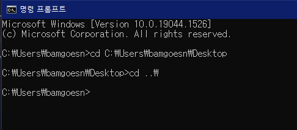
부모 폴더로 돌아왔습니다. ..\는 부모 폴더를 의미합니다. 그러면 이번엔 cd .\Desktop를 입력해봅시다.
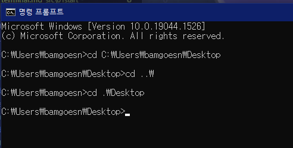
그랬더니 지금 가리키고 있던 디렉토리에 있는 Desktop 폴더를 가리킵니다. 이는 ..\가 현재 있는 폴더를 의미하기 때문입니다. ..\와 .\와 같이 현재 가리키는 디렉토리를 기준으로 위치가 결정되는 경로를 상대 경로라고 부릅니다. 폴더와 폴더 사이를 이동할 때엔 이 상대 경로를 더 자주 이용하게 됩니다.
한편, \ 대신 /를 사용해도 동일하게 동작합니다. 아래는 지금까지 한 것들을 /를 사용해 다시 한 것입니다.
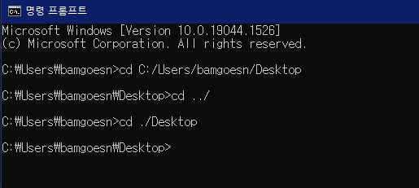
그리고, 폴더 이름을 다 입력하지 않고 Tab 키를 누르면 폴더 이름이 자동완성됩니다.
커맨드 라인 인터페이스 (Command Line Interface)
**커맨드 라인 인터페이스(CLI)**는 터미널에서 커맨드 라인으로 실행하는 프로그램을 의미합니다. 일반적인 프로그램은 아이콘을 더블클릭하면 창이 열리고, 이런저런 버튼을 클릭하면서 조작하게 되는데, 이러한 프로그램을 그래픽 유저 인터페이스(Graphic User Interface, GUI) 프로그램이라고 부릅니다. 반면 CLI 프로그램은 GUI가 없이 터미널로만 이용이 가능하죠. mdBook은 이러한 CLI 프로그램의 하나이기 때문에, mdBook을 사용하려면 기초적인 터미널 사용법을 알아야 합니다.
cmd에 mdbook을 입력해봅시다. 커맨드 맨 앞에 프로그램의 이름이 오면 해당 프로그램을 실행한다는 의미가 됩니다.
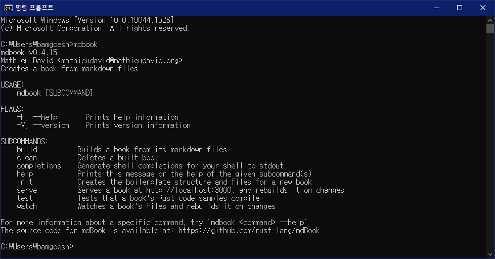
mdbook을 실행하면 mdbook을 이용하는 방법이 위와 같이 표시됩니다. USAGE 항목을 보니 커맨드에서 mdbook 뒤에 무언가를 더 붙여서 프로그램을 사용한다는 모양입니다. 다음 장에선 구체적으로 mdbook을 어떻게 사용하는지를 직접 책을 만들어보면서 배워봅시다.
새로운 책 만들기
이제 mdBook을 본격적으로 사용해보면서 저희만의 작은 책을 만들어봅시다! 우선 CMD를 키고 cd Desktop을 입력해 바탕화면으로 이동한 후, mdbook init first-book을 입력해봅시다. 그런 다음 y와 My First Book을 입력해줍시다.
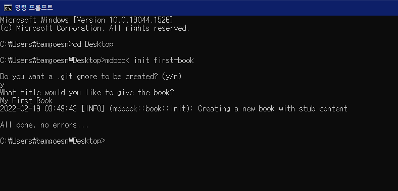
그리고 바탕화면을 확인해보면 first-book이라는 폴더가 생성된 것을 확인할 수 있습니다. VSC를 키고, 파일 -> 폴더 열기를 눌러 first-book 폴더를 열어봅시다.
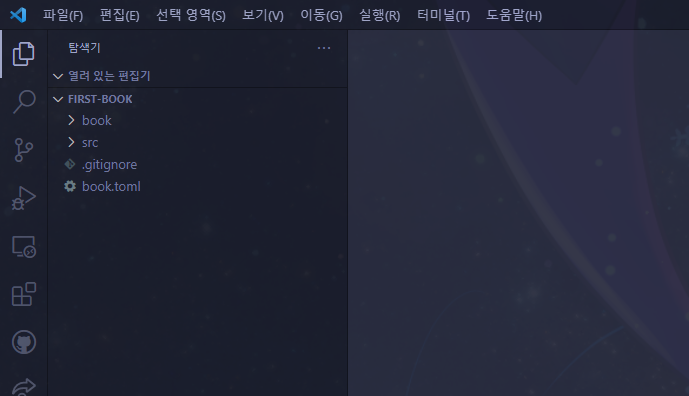
그러면 해당 폴더가 위 그림과 같은 구조로 되어 있음을 확인할 수 있습니다. 각 요소가 무슨 역할을 하는지 알아봅시다.
- src: 책의 내용이 저장된 폴더.
- chapter_1.md: 기본으로 만들어진 마크다운 파일. 이 파일과 같은 방법으로 책에 포함될 모든 문서를 만들게 됩니다.
- SUMMARY.md: 책의 단원 구성을 담은 마크다운 파일.
- book: 웹에 표시하기 위해 변환된 책 파일을 담은 폴더. mdbook 프로그램으로 자동생성되는 부분으로 건드릴 필요 없습니다.
- book.toml: 책의 속성을 저장하는 파일.
그럼 살펴봐야 할 파일의 내용을 확인해봅시다.
book.toml
book.toml 파일은 책의 속성을 기록합니다. 현재 내용은 아래와 같은 형식일 겁니다.
[book]
language = "en"
multilingual = false
src = "src"
title = "My First Book"
language는 이 책의 언어를 표시합니다. 우리 책은 한국어로 적힐 예정이니 ko로 바꿔줘도 되지만, 이는 웹 검색 노출과 가장 큰 관련이 있는 거라 가만히 둬도 됩니다.
multilingual는 다국어를 지원하는 사이트인지 아닌지를 표기하는 항목입니다. 아예 지워버려도 됩니다.
src는 책의 내용이 어느 폴더에 들어있는지를 표시합니다. 전술했듯이 책의 내용은 src 폴더 안에 들어 있으므로 src = "src"가 올바른 값입니다.
title은 책의 제목입니다. 사이트 상단에 제목으로 항시 표시됩니다. 이는 후에 확인해볼 겁니다.
수식 지원 추가
한편 마크다운은 기본적으로 수식을 지원하지 않습니다. 대신, mdBook에 수식을 지원하는 플러그인을 간단히 추가할 수 있습니다. book.toml 파일 밑에 아래 내용을 추가해주세요.
[output.html]
mathjax-support = true
그러면 이 책에서 수식을 사용할 수 있게 됩니다. 구체적인 사용 방법은 곧 알아볼 겁니다.
최종적으로 book.toml의 내용은 아래와 같아져야 합니다.
[book]
language = "ko"
src = "src"
title = "My First Book"
[output.html]
mathjax-support = true
book.toml은 이대로 놓고 저장해둡시다. 이 파일은 제목을 바꿀 때 이외에는 건드릴 일이 없습니다.